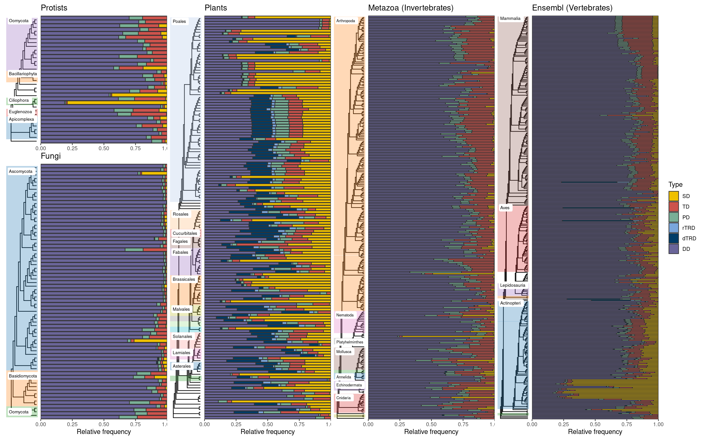
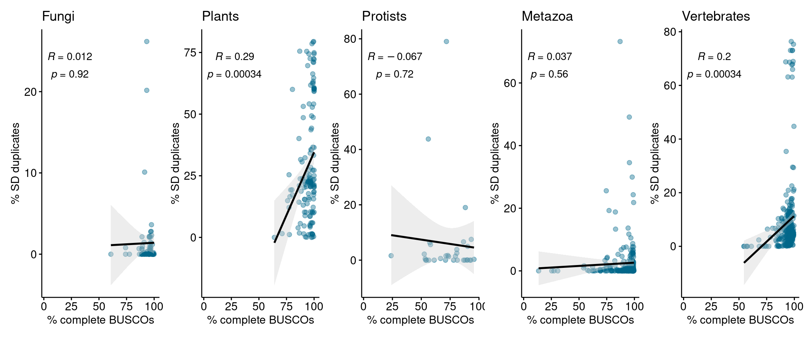
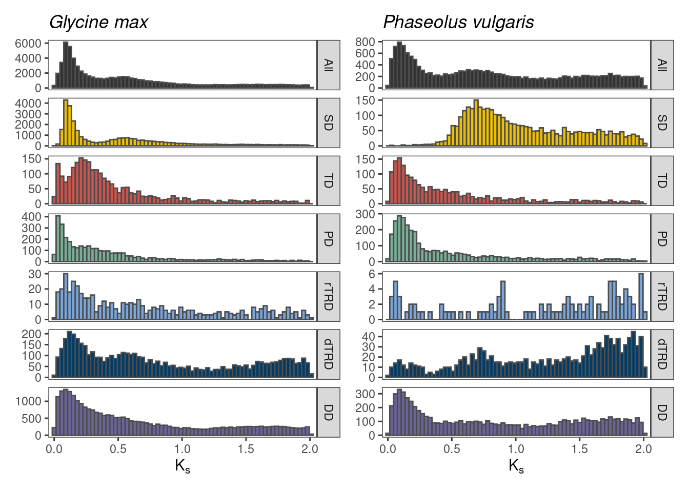
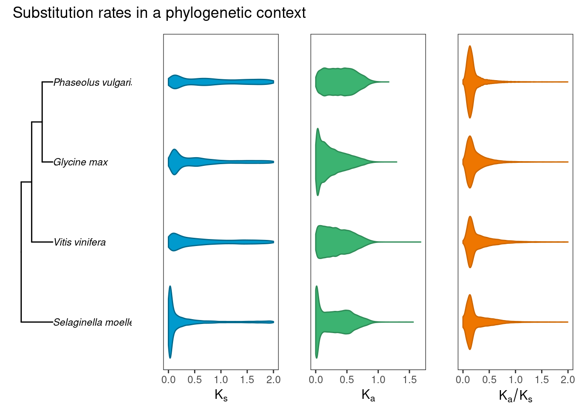

set.seed(123) # for reproducibility
# Load required packages
library(doubletrouble)
library(here)
library(ggtree)
library(tidyverse)
library(patchwork)
source(here("code", "utils.R"))
source(here("code", "utils_visualization.R"))4 Visual exploration of duplicated genes across the Eukarya tree of life
Here, we will describe the code to perform exploratory data analyses on the duplicated gene frequencies in genomes from Ensembl instances.
To start, let’s load the required data and packages.
4.1 Loading data
First, we will load object the same list of metadata we’ve been using in other chapters.
# Load metadata
load(here("products", "result_files", "metadata_all.rda"))We will also need objects generated in previous chapters, namely:
- Species trees
- Duplicates per species (genes and gene pairs)
- BUSCO scores for genomes in each instance
# Load BUSCO scores
load(here("products", "result_files", "busco_scores", "fungi_busco_scores.rda"))
load(here("products", "result_files", "busco_scores", "protists_busco_scores.rda"))
load(here("products", "result_files", "busco_scores", "plants_busco_scores.rda"))
load(here("products", "result_files", "busco_scores", "metazoa_busco_scores.rda"))
load(here("products", "result_files", "busco_scores", "vertebrates_busco_scores.rda"))
# Load trees
load(here("products", "result_files", "trees", "fungi_busco_trees.rda"))
load(here("products", "result_files", "trees", "protists_busco_trees.rda"))
load(here("products", "result_files", "trees", "plants_busco_trees.rda"))
load(here("products", "result_files", "trees", "metazoa_busco_trees.rda"))
load(here("products", "result_files", "trees", "vertebrates_busco_trees.rda"))
# Load duplicated genes
load(here("products", "result_files", "fungi_duplicates_unique.rda"))
load(here("products", "result_files", "protists_duplicates_unique.rda"))
load(here("products", "result_files", "plants_duplicates_unique.rda"))
load(here("products", "result_files", "vertebrates_duplicates_unique.rda"))
load(here("products", "result_files", "metazoa_duplicates_unique.rda"))
# Load substitution rates for plants
load(here("products", "result_files", "plants_kaks.rda"))4.2 Visualizing the frequency of duplicated genes by mode
Now, we will visualize the frequency of duplicated genes by mode for each species. For that, we will first convert the list of duplicates into a long-formatted data frame, and clean tip labels in our species trees.
# Rename tip labels of trees
tree_fungi <- fungi_busco_trees$conc
tree_fungi$tip.label <- gsub("\\.", "_", tree_fungi$tip.label)
tree_protists <- protists_busco_trees$conc
tree_protists$tip.label <- gsub("\\.", "_", tree_protists$tip.label)
tree_plants <- plants_busco_trees$conc
tree_plants$tip.label <- gsub("\\.", "_", tree_plants$tip.label)
tree_metazoa <- metazoa_busco_trees$conc
tree_metazoa$tip.label <- gsub("\\.", "_", tree_metazoa$tip.label)
tree_vertebrates <- vertebrates_busco_trees$conc
tree_vertebrates$tip.label <- gsub("\\.", "_", tree_vertebrates$tip.label)
# Get count tables
counts_fungi <- duplicates2counts(fungi_duplicates_unique)
counts_protists <- duplicates2counts(protists_duplicates_unique)
counts_plants <- duplicates2counts(plants_duplicates_unique)
counts_vertebrates <- duplicates2counts(vertebrates_duplicates_unique)
counts_metazoa <- duplicates2counts(metazoa_duplicates_unique)Now, we will plot the trees with data for each Ensembl instance.
# Fungi
p_fungi_tree <- plot_tree_taxa(
tree = tree_fungi,
metadata = metadata_all$fungi,
taxon = "phylum",
text_size = 2.5
)
p_fungi <- wrap_plots(
# Plot 1: Species tree
p_fungi_tree,
# Plot 2: Duplicate relative frequency by mode
plot_duplicate_freqs(
counts_fungi |>
mutate(
species = factor(species, levels = rev(get_taxa_name(p_fungi_tree)))
),
plot_type = "stack_percent"
) +
theme(
axis.text.y = element_blank(),
axis.ticks.y = element_blank()
) +
labs(y = NULL),
widths = c(1, 4)
) +
plot_annotation(title = "Fungi") &
theme(plot.margin = margin(2, 0, 0, 2))
# Protists
p_protists_tree <- plot_tree_taxa(
tree = tree_protists,
metadata = metadata_all$protists |>
filter(phylum != "Evosea"),
taxon = "phylum",
min_n_lab = 2,
padding_text = 0.2,
text_size = 2.5
)
p_protists <- wrap_plots(
# Plot 1: Species tree
p_protists_tree,
# Plot 2: Duplicate relative frequency by mode
plot_duplicate_freqs(
counts_protists |>
mutate(
species = factor(species, levels = rev(get_taxa_name(p_protists_tree)))
),
plot_type = "stack_percent") +
theme(
axis.text.y = element_blank(),
axis.ticks.y = element_blank()
) +
labs(y = NULL),
widths = c(1, 4)
) +
plot_annotation(title = "Protists") &
theme(plot.margin = margin(2, 0, 0, 2))
# Plants
p_plants_tree <- plot_tree_taxa(
tree = tree_plants,
metadata = metadata_all$plants,
taxon = "order",
min_n_lab = 3,
text_size = 2.5
)
p_plants <- wrap_plots(
# Plot 1: Species tree
p_plants_tree,
# Plot 2: Duplicate relative frequency by mode
plot_duplicate_freqs(
counts_plants |>
mutate(
species = factor(species, levels = rev(get_taxa_name(p_plants_tree)))
),
plot_type = "stack_percent") +
theme(
axis.text.y = element_blank(),
axis.ticks.y = element_blank()
) +
labs(y = NULL),
widths = c(1, 4)
) +
plot_annotation(title = "Plants") &
theme(plot.margin = margin(2, 0, 0, 2))
# Metazoa
p_metazoa_tree <- plot_tree_taxa(
tree = tree_metazoa,
metadata = metadata_all$metazoa |>
filter(class != "Myxozoa"),
taxon = "phylum",
min_n = 2,
text_size = 2.2,
padding_text = 2
)
p_metazoa <- wrap_plots(
# Plot 1: Species tree
p_metazoa_tree,
# Plot 2: Duplicate relative frequency by mode
plot_duplicate_freqs(
counts_metazoa |>
mutate(
species = factor(species, levels = rev(get_taxa_name(p_metazoa_tree)))
),
plot_type = "stack_percent") +
theme(
axis.text.y = element_blank(),
axis.ticks.y = element_blank()
) +
labs(y = NULL),
widths = c(1, 4)
) +
plot_annotation(title = "Metazoa") &
theme(plot.margin = margin(2, 0, 0, 2))
# Vertebrates
p_vertebrates_tree <- plot_tree_taxa(
tree = tree_vertebrates,
metadata = metadata_all$ensembl |>
mutate(class = replace_na(class, "Other")),
taxon = "class",
min_n = 2,
text_size = 2.5
)
p_vertebrates <- wrap_plots(
# Plot 1: Species tree
p_vertebrates_tree,
# Plot 2: Duplicate relative frequency by mode
plot_duplicate_freqs(
counts_vertebrates |>
mutate(
species = factor(species, levels = rev(get_taxa_name(p_vertebrates_tree)))
),
plot_type = "stack_percent") +
theme(
axis.text.y = element_blank(),
axis.ticks.y = element_blank()
) +
labs(y = NULL),
widths = c(1, 4)
) +
plot_annotation(title = "Vertebrates") &
theme(plot.margin = margin(2, 0, 0, 2))
# Combining all figures into one
p_duplicates_all_ensembl <- wrap_plots(
wrap_plots(
p_protists +
theme(legend.position = "none") +
labs(title = "Protists", x = NULL),
p_fungi +
theme(legend.position = "none") +
ggtitle("Fungi"),
nrow = 2, heights = c(1, 2)
),
p_plants + theme(legend.position = "none") + ggtitle("Plants"),
p_metazoa + theme(legend.position = "none") + ggtitle("Metazoa (Invertebrates)"),
p_vertebrates + ggtitle("Ensembl (Vertebrates)"),
nrow = 1
) +
plot_layout(axis_titles = "collect")p_duplicates_all_ensembl
By visually comparing the Ensembl instances, we can see that plant genomes have a much greater abundance of segmental duplicates, possibly due to pervasive whole-genome duplication events. However, other major branches of the Eukarya tree of life also have particular species with a high proportion of SD-derived genes. Notably, while SD events are widespread in plants, vertebrate species with high proportions of SD-derived genes are concentrated in a particular branch (teleost fishes). To investigate that, we will highlight species for which at least 20% of the duplicated genes derived from segmental duplications.
# For each Ensembl instance, show species with >=20% of genes derived from SD
## Define helper function
sd_abundant <- function(count_table, min = 20) {
perc_table <- count_table |>
group_by(species) |>
mutate(percentage = (n / sum(n)) * 100) |>
ungroup() |>
filter(type == "SD", percentage >= min)
return(perc_table)
}
# Get a table of SD-abundant species for each instance
sd_abundant_spp <- bind_rows(
sd_abundant(counts_fungi) |> mutate(instance = "fungi"),
sd_abundant(counts_protists) |> mutate(instance = "protists"),
sd_abundant(counts_plants) |> mutate(instance = "plants"),
sd_abundant(counts_vertebrates) |> mutate(instance = "vertebrates"),
sd_abundant(counts_metazoa) |> mutate(instance = "metazoa")
) |>
as.data.frame()Then, let’s summarize the frequencies (absolute and relative) in a table.
# How many species per instance?
sd_abundant_spp |>
count(instance) |>
mutate(
percentage = n / c(
nrow(metadata_all$fungi),
nrow(metadata_all$metazoa),
nrow(metadata_all$plants),
nrow(metadata_all$protists),
nrow(metadata_all$ensembl)
) * 100
) instance n percentage
1 fungi 2 2.857143
2 metazoa 7 2.766798
3 plants 94 63.087248
4 protists 2 6.060606
5 vertebrates 21 6.624606Once again, our findings highlight the abundance of large-scale duplications in plant genomes, as segmental duplications contributed to 20% of the duplicated genes in 94 species (63%). Next, let’s print all SD-abundant species.
# Show all species
knitr::kable(sd_abundant_spp)| type | n | species | percentage | instance |
|---|---|---|---|---|
| SD | 2138 | fusarium_oxysporum | 20.16030 | fungi |
| SD | 683 | saccharomyces_cerevisiae | 26.16858 | fungi |
| SD | 14351 | emiliania_huxleyi | 43.78509 | protists |
| SD | 27661 | paramecium_tetraurelia | 79.03369 | protists |
| SD | 22430 | actinidia_chinensis | 72.54908 | plants |
| SD | 4357 | ananas_comosus | 22.15048 | plants |
| SD | 5885 | arabidopsis_halleri | 21.37202 | plants |
| SD | 7530 | arabidopsis_thaliana | 33.29796 | plants |
| SD | 42997 | avena_sativa_ot3098 | 74.43306 | plants |
| SD | 63492 | avena_sativa_sang | 79.22833 | plants |
| SD | 7461 | brachypodium_distachyon | 27.24285 | plants |
| SD | 48381 | brassica_juncea | 69.66407 | plants |
| SD | 59918 | brassica_napus | 63.31417 | plants |
| SD | 24314 | brassica_oleracea | 44.30232 | plants |
| SD | 23541 | brassica_rapa | 62.58907 | plants |
| SD | 19282 | brassica_rapa_ro18 | 49.29567 | plants |
| SD | 69355 | camelina_sativa | 79.45628 | plants |
| SD | 15785 | chenopodium_quinoa | 48.57371 | plants |
| SD | 3600 | citrullus_lanatus | 22.76608 | plants |
| SD | 4084 | coffea_canephora | 20.60545 | plants |
| SD | 3317 | cynara_cardunculus | 20.20959 | plants |
| SD | 41246 | digitaria_exilis | 75.51999 | plants |
| SD | 8809 | dioscorea_rotundata | 32.30764 | plants |
| SD | 66262 | echinochloa_crusgalli | 70.97016 | plants |
| SD | 13447 | eragrostis_curvula | 27.40650 | plants |
| SD | 46488 | eucalyptus_grandis | 75.45773 | plants |
| SD | 6846 | ficus_carica | 30.61580 | plants |
| SD | 6747 | galdieria_sulphuraria | 25.40573 | plants |
| SD | 36994 | glycine_max | 72.19468 | plants |
| SD | 16290 | gossypium_raimondii | 48.65882 | plants |
| SD | 13432 | helianthus_annuus | 23.21425 | plants |
| SD | 9537 | ipomoea_triloba | 35.65100 | plants |
| SD | 13096 | juglans_regia | 34.16556 | plants |
| SD | 7374 | kalanchoe_fedtschenkoi | 28.37900 | plants |
| SD | 6757 | lactuca_sativa | 20.52178 | plants |
| SD | 5758 | leersia_perrieri | 25.97321 | plants |
| SD | 16167 | lupinus_angustifolius | 54.14448 | plants |
| SD | 22987 | malus_domestica_golden | 62.58031 | plants |
| SD | 14278 | manihot_esculenta | 52.81693 | plants |
| SD | 16170 | musa_acuminata | 54.10017 | plants |
| SD | 4586 | nymphaea_colorata | 20.98472 | plants |
| SD | 5092 | oryza_barthii | 20.55464 | plants |
| SD | 5078 | oryza_brachyantha | 23.83366 | plants |
| SD | 6054 | oryza_glaberrima | 23.77567 | plants |
| SD | 5454 | oryza_glumipatula | 21.46484 | plants |
| SD | 5847 | oryza_punctata | 24.25437 | plants |
| SD | 5587 | oryza_rufipogon | 21.24335 | plants |
| SD | 6096 | oryza_sativa | 23.94344 | plants |
| SD | 6136 | oryza_sativa_arc | 22.25769 | plants |
| SD | 6139 | oryza_sativa_azucena | 22.19370 | plants |
| SD | 6186 | oryza_sativa_chaomeo | 22.05583 | plants |
| SD | 6125 | oryza_sativa_gobolsailbalam | 22.38506 | plants |
| SD | 6207 | oryza_sativa_ir64 | 22.73876 | plants |
| SD | 6131 | oryza_sativa_ketannangka | 22.16238 | plants |
| SD | 6479 | oryza_sativa_khaoyaiguang | 23.36964 | plants |
| SD | 6144 | oryza_sativa_larhamugad | 22.46107 | plants |
| SD | 7212 | oryza_sativa_lima | 25.41584 | plants |
| SD | 15680 | oryza_sativa_liuxu | 43.62827 | plants |
| SD | 6044 | oryza_sativa_mh63 | 22.24512 | plants |
| SD | 6158 | oryza_sativa_n22 | 22.43270 | plants |
| SD | 6133 | oryza_sativa_natelboro | 22.56688 | plants |
| SD | 6172 | oryza_sativa_pr106 | 22.42896 | plants |
| SD | 6084 | oryza_sativa_zs97 | 22.69810 | plants |
| SD | 6182 | panicum_hallii | 25.04761 | plants |
| SD | 5920 | panicum_hallii_fil2 | 23.51633 | plants |
| SD | 19358 | papaver_somniferum | 53.13169 | plants |
| SD | 8274 | phaseolus_vulgaris | 35.38165 | plants |
| SD | 4494 | physcomitrium_patens | 20.34221 | plants |
| SD | 19860 | populus_trichocarpa | 64.67159 | plants |
| SD | 4340 | prunus_persica | 20.51040 | plants |
| SD | 28231 | saccharum_spontaneum | 60.01743 | plants |
| SD | 26322 | selaginella_moellendorffii | 78.55906 | plants |
| SD | 8274 | sesamum_indicum | 40.09887 | plants |
| SD | 5474 | setaria_italica | 20.87799 | plants |
| SD | 5966 | setaria_viridis | 20.86525 | plants |
| SD | 6400 | solanum_lycopersicum | 23.89486 | plants |
| SD | 5462 | sorghum_bicolor | 21.38857 | plants |
| SD | 4707 | theobroma_cacao | 21.34888 | plants |
| SD | 4700 | theobroma_cacao_criollo | 27.23059 | plants |
| SD | 79033 | triticum_aestivum | 74.43304 | plants |
| SD | 84812 | triticum_aestivum_arinalrfor | 59.47838 | plants |
| SD | 83573 | triticum_aestivum_jagger | 60.03419 | plants |
| SD | 84383 | triticum_aestivum_julius | 60.38658 | plants |
| SD | 83838 | triticum_aestivum_lancer | 60.23148 | plants |
| SD | 84018 | triticum_aestivum_landmark | 60.46244 | plants |
| SD | 83797 | triticum_aestivum_mace | 60.13290 | plants |
| SD | 84076 | triticum_aestivum_mattis | 60.28855 | plants |
| SD | 85143 | triticum_aestivum_norin61 | 59.19326 | plants |
| SD | 78393 | triticum_aestivum_refseqv2 | 74.92903 | plants |
| SD | 71709 | triticum_aestivum_renan | 72.46554 | plants |
| SD | 84481 | triticum_aestivum_stanley | 60.76589 | plants |
| SD | 39910 | triticum_dicoccoides | 66.30559 | plants |
| SD | 79753 | triticum_spelta | 71.15848 | plants |
| SD | 40003 | triticum_turgidum | 61.74827 | plants |
| SD | 6408 | vigna_angularis | 22.74437 | plants |
| SD | 5792 | vigna_radiata | 31.59503 | plants |
| SD | 9733 | vigna_unguiculata | 36.46001 | plants |
| SD | 12270 | zea_mays | 36.60283 | plants |
| SD | 33441 | carassius_auratus | 63.10337 | vertebrates |
| SD | 3320 | chelydra_serpentina | 20.89759 | vertebrates |
| SD | 32958 | cyprinus_carpio_carpio | 76.37476 | vertebrates |
| SD | 32609 | cyprinus_carpio_germanmirror | 75.35298 | vertebrates |
| SD | 29145 | cyprinus_carpio_hebaored | 65.96578 | vertebrates |
| SD | 31855 | cyprinus_carpio_huanghe | 72.97322 | vertebrates |
| SD | 7716 | danio_rerio | 29.36073 | vertebrates |
| SD | 4099 | esox_lucius | 20.63220 | vertebrates |
| SD | 4039 | homo_sapiens | 21.22996 | vertebrates |
| SD | 16593 | hucho_hucho | 35.39387 | vertebrates |
| SD | 27413 | oncorhynchus_kisutch | 67.90775 | vertebrates |
| SD | 30397 | oncorhynchus_mykiss | 68.93838 | vertebrates |
| SD | 27241 | oncorhynchus_tshawytscha | 68.78519 | vertebrates |
| SD | 5961 | paramormyrops_kingsleyae | 29.53183 | vertebrates |
| SD | 29770 | salmo_salar | 67.73144 | vertebrates |
| SD | 30000 | salmo_trutta | 73.09585 | vertebrates |
| SD | 8900 | scleropages_formosus | 44.73936 | vertebrates |
| SD | 30939 | sinocyclocheilus_anshuiensis | 73.04169 | vertebrates |
| SD | 27003 | sinocyclocheilus_grahami | 63.16048 | vertebrates |
| SD | 29952 | sinocyclocheilus_rhinocerous | 68.66260 | vertebrates |
| SD | 3940 | terrapene_carolina_triunguis | 22.53231 | vertebrates |
| SD | 13217 | actinia_equina_gca011057435 | 34.55335 | metazoa |
| SD | 31761 | adineta_vaga | 73.23265 | metazoa |
| SD | 12381 | amphibalanus_amphitrite_gca019059575v1 | 49.10757 | metazoa |
| SD | 6049 | caenorhabditis_brenneri | 25.57825 | metazoa |
| SD | 8823 | crassostrea_virginica_gca002022765v4 | 29.95213 | metazoa |
| SD | 4261 | lytechinus_variegatus_gca018143015v1 | 24.31384 | metazoa |
| SD | 4906 | strongylocentrotus_purpuratus | 21.82579 | metazoa |
4.3 BUSCO scores
Next, we will test whether the percentage of segmental duplicates in genomes is associated with the percentage of complete BUSCOs. In other words, we want to find out whether the low percentages of SD gene pairs is due to genome fragmentation.
# Define function to plot association between % SD and % complete BUSCOs
plot_busco_sd_assoc <- function(busco_df, counts_table) {
p <- busco_df |>
filter(Class %in% c("Complete_SC", "Complete_duplicate")) |>
mutate(species = str_replace_all(File, "\\.fa", "")) |>
mutate(species = str_replace_all(species, "\\.", "_")) |>
group_by(species) |>
summarise(complete_BUSCOs = sum(Frequency)) |>
inner_join(sd_abundant(counts_table, min = 0)) |>
ggpubr::ggscatter(
x = "complete_BUSCOs", y = "percentage",
color = "deepskyblue4", alpha = 0.4,
add = "reg.line", add.params = list(
color = "black", fill = "lightgray"
),
conf.int = TRUE,
cor.coef = TRUE,
cor.coeff.args = list(
method = "pearson", label.x = 3, label.sep = "\n"
)
) +
labs(x = "% complete BUSCOs", y = "% SD duplicates")
return(p)
}
# Fungi
p_busco_association <- patchwork::wrap_plots(
plot_busco_sd_assoc(fungi_busco_scores, counts_fungi) +
labs(title = "Fungi"),
plot_busco_sd_assoc(plants_busco_scores, counts_plants) +
labs(title = "Plants"),
plot_busco_sd_assoc(protists_busco_scores, counts_protists) +
labs(title = "Protists"),
plot_busco_sd_assoc(metazoa_busco_scores, counts_metazoa) +
labs(title = "Metazoa"),
plot_busco_sd_assoc(vertebrates_busco_scores, counts_vertebrates) +
labs(title = "Vertebrates"),
nrow = 1
)p_busco_association
There is weak or no association between the percentage of complete BUSCOs and the percentage of SD-derived genes.
4.4 Visualizing substitution rates for selected plant species
Here, we will first visualize \(K_s\) distributions for Glycine max and Phaseolus vulgaris by mode of duplication.
# G. max
gmax_ks_distro <- plot_ks_distro(
plants_kaks$glycine_max, max_ks = 2, bytype = TRUE, binwidth = 0.03
) +
labs(title = NULL, y = NULL)
# P. vulgaris
pvu_ks_distro <- plot_ks_distro(
plants_kaks$phaseolus_vulgaris, max_ks = 2, bytype = TRUE, binwidth = 0.03
) +
labs(title = NULL, y = NULL)
# Combining plots
p_ks_legumes <- wrap_plots(
gmax_ks_distro +
labs(title = "Glycine max") +
theme(plot.title = element_text(face = "italic")),
pvu_ks_distro +
labs(title = "Phaseolus vulgaris") +
theme(plot.title = element_text(face = "italic")),
nrow = 1
)p_ks_legumes
The plot shows the importance of visualizing Ks distributions by mode. When visualizing the whole-paranome distribution, detection of peaks is not trivial, and potential whole-genome duplication events might be masked. When we split the distribution by mode of duplication, we can more easily observe segmental duplicates that cluster together, providing strong evidence for whole-genome duplication events (2 events for G. max, and 1 events for P. vulgaris).
Next, we will plot the distributions of \(K_a\), \(K_s\), and \(K_a/K_s\) values for selected plant species with phylogenetic context.
# Subset plant tree to get selected species only
tree_subset <- ape::keep.tip(tree_plants, names(plants_kaks))
# Clean names
names(plants_kaks) <- gsub("_", " ", str_to_title(names(plants_kaks)))
tree_subset$tip.label <- gsub("_", " ", str_to_title(tree_subset$tip.label))
# Plot tree
p_tree_selected <- ggtree(tree_subset, branch.length = "none") +
geom_tiplab(fontface = "italic", size = 3)
# Reoder rates list based on tree topology
ord <- rev(ggtree::get_taxa_name(p_tree_selected))
rl <- plants_kaks[ord]
# Plot rates by species with tree on the left
p_rates_phylogeny <- wrap_plots(
p_tree_selected + xlim(0, 10),
plot_rates_by_species(rl, rate_column = "Ks", range = c(0, 2)) +
theme(
axis.text.y = element_blank(),
axis.ticks.y = element_blank()
),
plot_rates_by_species(
rl, rate_column = "Ka", range = c(0, 2),
fill = "mediumseagreen", color = "seagreen"
) +
theme(
axis.text.y = element_blank(),
axis.ticks.y = element_blank()
),
plot_rates_by_species(
rl, rate_column = "Ka_Ks", range = c(0, 2),
fill = "darkorange2", color = "darkorange3"
) +
theme(
axis.text.y = element_blank(),
axis.ticks.y = element_blank()
),
nrow = 1
) +
plot_annotation(title = "Substitution rates in a phylogenetic context")p_rates_phylogeny
Saving objects
Finally, let’s save important objects created in this session for further use.
# Save plots for each instance
save(
p_fungi, compress = "xz",
file = here("products", "plots", "p_fungi.rda")
)
save(
p_metazoa, compress = "xz",
file = here("products", "plots", "p_metazoa.rda")
)
save(
p_protists, compress = "xz",
file = here("products", "plots", "p_protists.rda")
)
save(
p_vertebrates, compress = "xz",
file = here("products", "plots", "p_vertebrates.rda")
)
save(
p_plants, compress = "xz",
file = here("products", "plots", "p_plants.rda")
)
save(
p_duplicates_all_ensembl, compress = "xz",
file = here("products", "plots", "p_duplicates_all_ensembl.rda")
)
save(
p_ks_legumes, compress = "xz",
file = here("products", "plots", "p_ks_legumes.rda")
)
save(
p_rates_phylogeny, compress = "xz",
file = here("products", "plots", "p_rates_phylogeny.rda")
)
save(
p_busco_association, compress = "xz",
file = here("products", "plots", "p_busco_association.rda")
)
# Save tables
save(
sd_abundant_spp, compress = "xz",
file = here("products", "result_files", "sd_abundant_spp.rda")
)Session info
This document was created under the following conditions:
─ Session info ───────────────────────────────────────────────────────────────
setting value
version R version 4.3.2 (2023-10-31)
os Ubuntu 22.04.3 LTS
system x86_64, linux-gnu
ui X11
language (EN)
collate en_US.UTF-8
ctype en_US.UTF-8
tz Europe/Brussels
date 2024-02-27
pandoc 3.1.1 @ /usr/lib/rstudio/resources/app/bin/quarto/bin/tools/ (via rmarkdown)
─ Packages ───────────────────────────────────────────────────────────────────
package * version date (UTC) lib source
abind 1.4-5 2016-07-21 [1] CRAN (R 4.3.2)
ade4 1.7-22 2023-02-06 [1] CRAN (R 4.3.2)
AnnotationDbi 1.64.1 2023-11-03 [1] Bioconductor
ape 5.7-1 2023-03-13 [1] CRAN (R 4.3.2)
aplot 0.2.2 2023-10-06 [1] CRAN (R 4.3.2)
backports 1.4.1 2021-12-13 [1] CRAN (R 4.3.2)
Biobase 2.62.0 2023-10-24 [1] Bioconductor
BiocFileCache 2.10.1 2023-10-26 [1] Bioconductor
BiocGenerics 0.48.1 2023-11-01 [1] Bioconductor
BiocIO 1.12.0 2023-10-24 [1] Bioconductor
BiocParallel 1.37.0 2024-01-19 [1] Github (Bioconductor/BiocParallel@79a1b2d)
biomaRt 2.58.2 2024-01-30 [1] Bioconductor 3.18 (R 4.3.2)
Biostrings 2.70.2 2024-01-28 [1] Bioconductor 3.18 (R 4.3.2)
bit 4.0.5 2022-11-15 [1] CRAN (R 4.3.2)
bit64 4.0.5 2020-08-30 [1] CRAN (R 4.3.2)
bitops 1.0-7 2021-04-24 [1] CRAN (R 4.3.2)
blob 1.2.4 2023-03-17 [1] CRAN (R 4.3.2)
broom 1.0.5 2023-06-09 [1] CRAN (R 4.3.2)
cachem 1.0.8 2023-05-01 [1] CRAN (R 4.3.2)
car 3.1-2 2023-03-30 [1] CRAN (R 4.3.2)
carData 3.0-5 2022-01-06 [1] CRAN (R 4.3.2)
cli 3.6.2 2023-12-11 [1] CRAN (R 4.3.2)
coda 0.19-4.1 2024-01-31 [1] CRAN (R 4.3.2)
codetools 0.2-19 2023-02-01 [4] CRAN (R 4.2.2)
colorspace 2.1-0 2023-01-23 [1] CRAN (R 4.3.2)
crayon 1.5.2 2022-09-29 [1] CRAN (R 4.3.2)
curl 5.2.0 2023-12-08 [1] CRAN (R 4.3.2)
DBI 1.2.1 2024-01-12 [1] CRAN (R 4.3.2)
dbplyr 2.4.0 2023-10-26 [1] CRAN (R 4.3.2)
DelayedArray 0.28.0 2023-10-24 [1] Bioconductor
digest 0.6.34 2024-01-11 [1] CRAN (R 4.3.2)
doParallel 1.0.17 2022-02-07 [1] CRAN (R 4.3.2)
doubletrouble * 1.3.4 2024-02-05 [1] Bioconductor
dplyr * 1.1.4 2023-11-17 [1] CRAN (R 4.3.2)
evaluate 0.23 2023-11-01 [1] CRAN (R 4.3.2)
fansi 1.0.6 2023-12-08 [1] CRAN (R 4.3.2)
farver 2.1.1 2022-07-06 [1] CRAN (R 4.3.2)
fastmap 1.1.1 2023-02-24 [1] CRAN (R 4.3.2)
filelock 1.0.3 2023-12-11 [1] CRAN (R 4.3.2)
forcats * 1.0.0 2023-01-29 [1] CRAN (R 4.3.2)
foreach 1.5.2 2022-02-02 [1] CRAN (R 4.3.2)
fs 1.6.3 2023-07-20 [1] CRAN (R 4.3.2)
generics 0.1.3 2022-07-05 [1] CRAN (R 4.3.2)
GenomeInfoDb 1.38.6 2024-02-08 [1] Bioconductor 3.18 (R 4.3.2)
GenomeInfoDbData 1.2.11 2023-12-21 [1] Bioconductor
GenomicAlignments 1.38.2 2024-01-16 [1] Bioconductor 3.18 (R 4.3.2)
GenomicFeatures 1.54.3 2024-01-31 [1] Bioconductor 3.18 (R 4.3.2)
GenomicRanges 1.54.1 2023-10-29 [1] Bioconductor
ggfun 0.1.4 2024-01-19 [1] CRAN (R 4.3.2)
ggnetwork 0.5.13 2024-02-14 [1] CRAN (R 4.3.2)
ggplot2 * 3.4.4 2023-10-12 [1] CRAN (R 4.3.2)
ggplotify 0.1.2 2023-08-09 [1] CRAN (R 4.3.2)
ggpubr 0.6.0.999 2024-02-09 [1] Github (kassambara/ggpubr@6aeb4f7)
ggsignif 0.6.4 2022-10-13 [1] CRAN (R 4.3.2)
ggtree * 3.10.0 2023-10-24 [1] Bioconductor
glue 1.7.0 2024-01-09 [1] CRAN (R 4.3.2)
gridGraphics 0.5-1 2020-12-13 [1] CRAN (R 4.3.2)
gtable 0.3.4 2023-08-21 [1] CRAN (R 4.3.2)
here * 1.0.1 2020-12-13 [1] CRAN (R 4.3.2)
hms 1.1.3 2023-03-21 [1] CRAN (R 4.3.2)
htmltools 0.5.7 2023-11-03 [1] CRAN (R 4.3.2)
htmlwidgets 1.6.4 2023-12-06 [1] CRAN (R 4.3.2)
httr 1.4.7 2023-08-15 [1] CRAN (R 4.3.2)
igraph 2.0.1.1 2024-01-30 [1] CRAN (R 4.3.2)
intergraph 2.0-4 2024-02-01 [1] CRAN (R 4.3.2)
IRanges 2.36.0 2023-10-24 [1] Bioconductor
iterators 1.0.14 2022-02-05 [1] CRAN (R 4.3.2)
jsonlite 1.8.8 2023-12-04 [1] CRAN (R 4.3.2)
KEGGREST 1.42.0 2023-10-24 [1] Bioconductor
knitr 1.45 2023-10-30 [1] CRAN (R 4.3.2)
labeling 0.4.3 2023-08-29 [1] CRAN (R 4.3.2)
lattice 0.22-5 2023-10-24 [4] CRAN (R 4.3.1)
lazyeval 0.2.2 2019-03-15 [1] CRAN (R 4.3.2)
lifecycle 1.0.4 2023-11-07 [1] CRAN (R 4.3.2)
lubridate * 1.9.3 2023-09-27 [1] CRAN (R 4.3.2)
magrittr 2.0.3 2022-03-30 [1] CRAN (R 4.3.2)
MASS 7.3-60 2023-05-04 [4] CRAN (R 4.3.1)
Matrix 1.6-3 2023-11-14 [4] CRAN (R 4.3.2)
MatrixGenerics 1.14.0 2023-10-24 [1] Bioconductor
matrixStats 1.2.0 2023-12-11 [1] CRAN (R 4.3.2)
mclust 6.0.1 2023-11-15 [1] CRAN (R 4.3.2)
memoise 2.0.1 2021-11-26 [1] CRAN (R 4.3.2)
mgcv 1.9-0 2023-07-11 [4] CRAN (R 4.3.1)
MSA2dist 1.6.0 2023-10-24 [1] Bioconductor
munsell 0.5.0 2018-06-12 [1] CRAN (R 4.3.2)
network 1.18.2 2023-12-05 [1] CRAN (R 4.3.2)
networkD3 0.4 2017-03-18 [1] CRAN (R 4.3.2)
nlme 3.1-163 2023-08-09 [4] CRAN (R 4.3.1)
patchwork * 1.2.0 2024-01-08 [1] CRAN (R 4.3.2)
pheatmap 1.0.12 2019-01-04 [1] CRAN (R 4.3.2)
pillar 1.9.0 2023-03-22 [1] CRAN (R 4.3.2)
pkgconfig 2.0.3 2019-09-22 [1] CRAN (R 4.3.2)
png 0.1-8 2022-11-29 [1] CRAN (R 4.3.2)
prettyunits 1.2.0 2023-09-24 [1] CRAN (R 4.3.2)
progress 1.2.3 2023-12-06 [1] CRAN (R 4.3.2)
purrr * 1.0.2 2023-08-10 [1] CRAN (R 4.3.2)
R6 2.5.1 2021-08-19 [1] CRAN (R 4.3.2)
rappdirs 0.3.3 2021-01-31 [1] CRAN (R 4.3.2)
RColorBrewer 1.1-3 2022-04-03 [1] CRAN (R 4.3.2)
Rcpp 1.0.12 2024-01-09 [1] CRAN (R 4.3.2)
RCurl 1.98-1.14 2024-01-09 [1] CRAN (R 4.3.2)
readr * 2.1.5 2024-01-10 [1] CRAN (R 4.3.2)
restfulr 0.0.15 2022-06-16 [1] CRAN (R 4.3.2)
rjson 0.2.21 2022-01-09 [1] CRAN (R 4.3.2)
rlang 1.1.3 2024-01-10 [1] CRAN (R 4.3.2)
rmarkdown 2.25 2023-09-18 [1] CRAN (R 4.3.2)
rprojroot 2.0.4 2023-11-05 [1] CRAN (R 4.3.2)
Rsamtools 2.18.0 2023-10-24 [1] Bioconductor
RSQLite 2.3.5 2024-01-21 [1] CRAN (R 4.3.2)
rstatix 0.7.2 2023-02-01 [1] CRAN (R 4.3.2)
rstudioapi 0.15.0 2023-07-07 [1] CRAN (R 4.3.2)
rtracklayer 1.62.0 2023-10-24 [1] Bioconductor
S4Arrays 1.2.0 2023-10-24 [1] Bioconductor
S4Vectors 0.40.2 2023-11-23 [1] Bioconductor 3.18 (R 4.3.2)
scales 1.3.0 2023-11-28 [1] CRAN (R 4.3.2)
seqinr 4.2-36 2023-12-08 [1] CRAN (R 4.3.2)
sessioninfo 1.2.2 2021-12-06 [1] CRAN (R 4.3.2)
SparseArray 1.2.4 2024-02-11 [1] Bioconductor 3.18 (R 4.3.2)
statnet.common 4.9.0 2023-05-24 [1] CRAN (R 4.3.2)
stringi 1.8.3 2023-12-11 [1] CRAN (R 4.3.2)
stringr * 1.5.1 2023-11-14 [1] CRAN (R 4.3.2)
SummarizedExperiment 1.32.0 2023-10-24 [1] Bioconductor
syntenet 1.4.0 2023-10-24 [1] Bioconductor
tibble * 3.2.1 2023-03-20 [1] CRAN (R 4.3.2)
tidyr * 1.3.1 2024-01-24 [1] CRAN (R 4.3.2)
tidyselect 1.2.0 2022-10-10 [1] CRAN (R 4.3.2)
tidytree 0.4.6 2023-12-12 [1] CRAN (R 4.3.2)
tidyverse * 2.0.0 2023-02-22 [1] CRAN (R 4.3.2)
timechange 0.3.0 2024-01-18 [1] CRAN (R 4.3.2)
treeio 1.26.0 2023-10-24 [1] Bioconductor
tzdb 0.4.0 2023-05-12 [1] CRAN (R 4.3.2)
utf8 1.2.4 2023-10-22 [1] CRAN (R 4.3.2)
vctrs 0.6.5 2023-12-01 [1] CRAN (R 4.3.2)
withr 3.0.0 2024-01-16 [1] CRAN (R 4.3.2)
xfun 0.42 2024-02-08 [1] CRAN (R 4.3.2)
XML 3.99-0.16.1 2024-01-22 [1] CRAN (R 4.3.2)
xml2 1.3.6 2023-12-04 [1] CRAN (R 4.3.2)
XVector 0.42.0 2023-10-24 [1] Bioconductor
yaml 2.3.8 2023-12-11 [1] CRAN (R 4.3.2)
yulab.utils 0.1.4 2024-01-28 [1] CRAN (R 4.3.2)
zlibbioc 1.48.0 2023-10-24 [1] Bioconductor
[1] /home/faalm/R/x86_64-pc-linux-gnu-library/4.3
[2] /usr/local/lib/R/site-library
[3] /usr/lib/R/site-library
[4] /usr/lib/R/library
──────────────────────────────────────────────────────────────────────────────